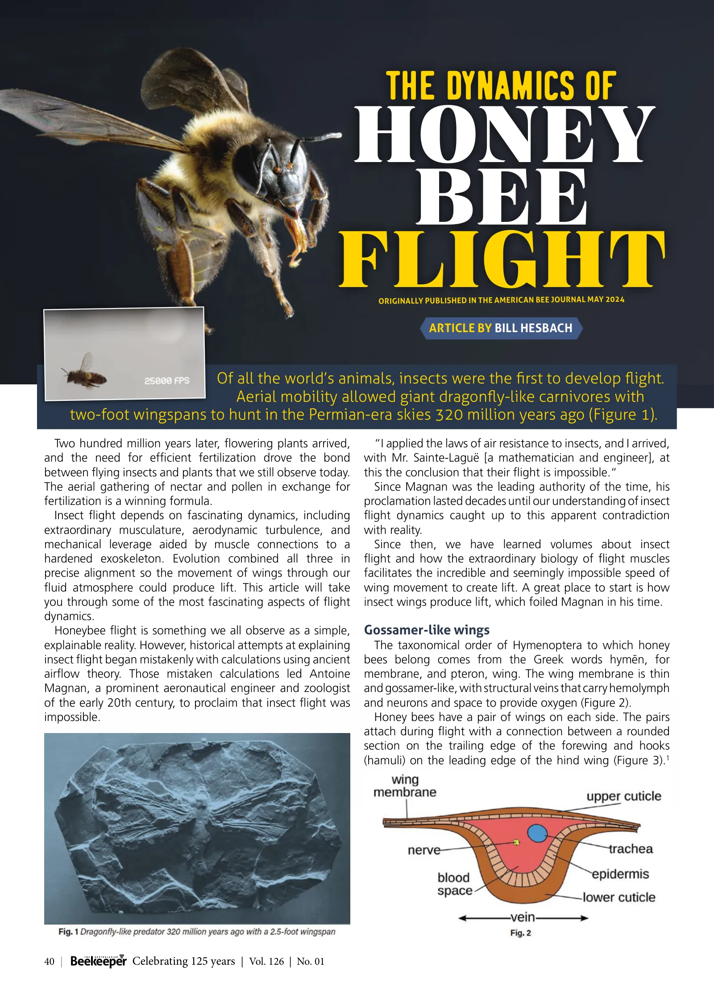

Two hundred million years later, flowering plants arrived,
and the need for efficient fertilization drove the bond
between flying insects and plants that we still observe today.
The aerial gathering of nectar and pollen in exchange for
fertilization is a winning formula.
Insect flight depends on fascinating dynamics, including
extraordinary musculature, aerodynamic turbulence, and
mechanical leverage aided by muscle connections to a
hardened exoskeleton. Evolution combined all three in
precise alignment so the movement of wings through our
fluid atmosphere could produce lift. This article will take
you through some of the most fascinating aspects of flight
dynamics.
Honeybee flight is something we all observe as a simple,
explainable reality. However, historical attempts at explaining
insect flight began mistakenly with calculations using ancient
airflow theory. Those mistaken calculations led Antoine
Magnan, a prominent aeronautical engineer and zoologist
of the early 20th century, to proclaim that insect flight was
impossible.
“I applied the laws of air resistance to insects, and I arrived,
with Mr. Sainte-Laguë [a mathematician and engineer], at
this the conclusion that their flight is impossible.“
Since Magnan was the leading authority of the time, his
proclamation lasted decades until our understanding of insect
flight dynamics caught up to this apparent contradiction
with reality.
Since then, we have learned volumes about insect
flight and how the extraordinary biology of flight muscles
facilitates the incredible and seemingly impossible speed of
wing movement to create lift. A great place to start is how
insect wings produce lift, which foiled Magnan in his time.
Gossamer-like wings
The taxonomical order of Hymenoptera to which honey
bees belong comes from the Greek words hymēn, for
membrane, and pteron, wing. The wing membrane is thin
and gossamer-like, with structural veins that carry hemolymph
and neurons and space to provide oxygen (Figure 2).
Honey bees have a pair of wings on each side. The pairs
attach during flight with a connection between a rounded
section on the trailing edge of the forewing and hooks
(hamuli) on the leading edge of the hind wing (Figure 3).1
Of all the world’s animals, insects were the first to develop flight.
Aerial mobility allowed giant dragonfly-like carnivores with
two-foot wingspans to hunt in the Permian-era skies 320 million years ago (Figure 1).
ARTICLE BY BILL HESBACH
ORIGINALLY PUBLISHED IN THE AMERICAN BEE JOURNAL MAY 2024
THE DYNAMICS OF
40 |
Celebrating 125 years | Vol. 126 | No. 01